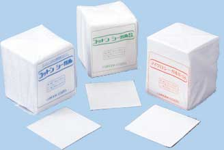

消耗材
ワイピングクロス
ワイピングクロス クリーンルームの決定版!!

- 精密鏡面研磨工程のワイピングに
- 装置部品のワイピングに
- 光学レンズのワイピングに
- 精密金型部品のワイピングに
- ラッピング後のワークのワイピングに
- 電子部品組立のワイピングに
その他、アルミサブスレートラップ後のバニッシングや、テクスチュアリング後の潤滑油塗布など、様々なシーンでご利用いただけます。
特にコットンシーガルＳは優れた吸水速度・吸水量を誇り、リントフリー性も抜群です。一方、コットンシーガルは、コットン100％なので、各種溶剤に対して高い安定性を誇ります。
主要なキャリア材質
| コットンシーガル | コットンシーガル S | |
|---|---|---|
| 製品規格 | 20cm x 20cm 四折 | 25cm x 25cm 変則六折 |
| 枚数 | 100枚/ポリ袋 20袋 単位 | 100/枚ポリ袋 30袋 単位 |
| 材質 | コットン100％ | セルロース系人造繊維 |
| 小売価格 | 14,600円 | 18,000円 |
※その他別サイズ及びロール製品は別途相談させていただきます。